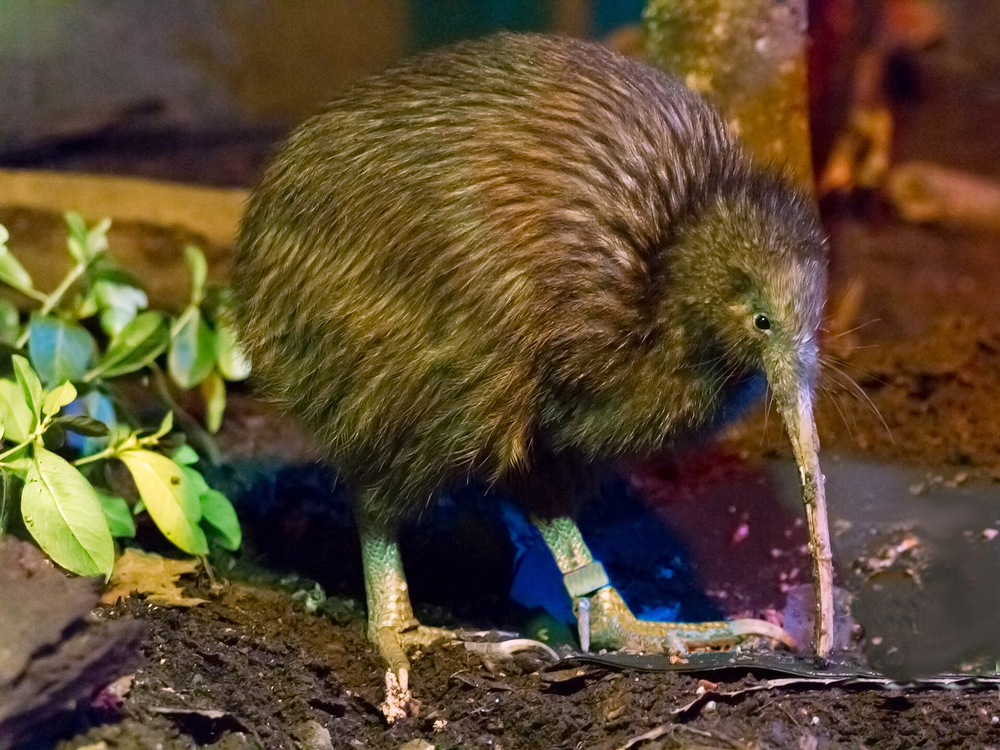
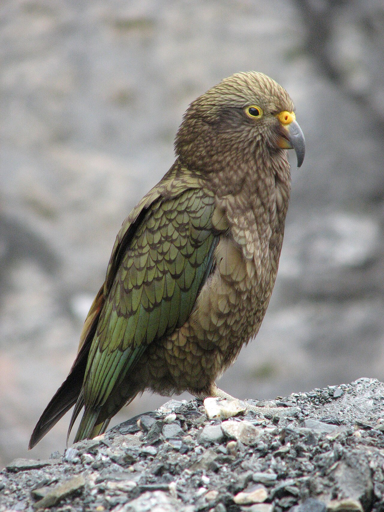
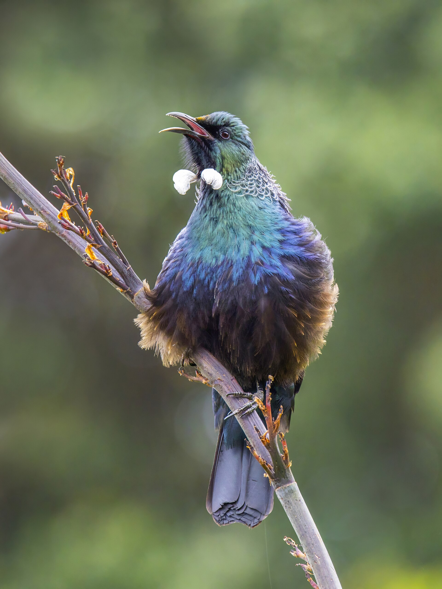
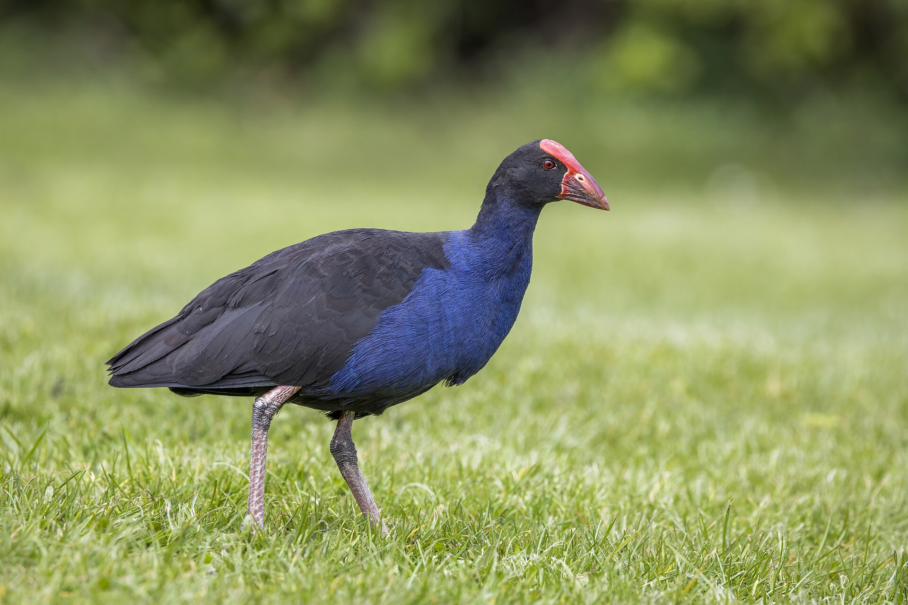
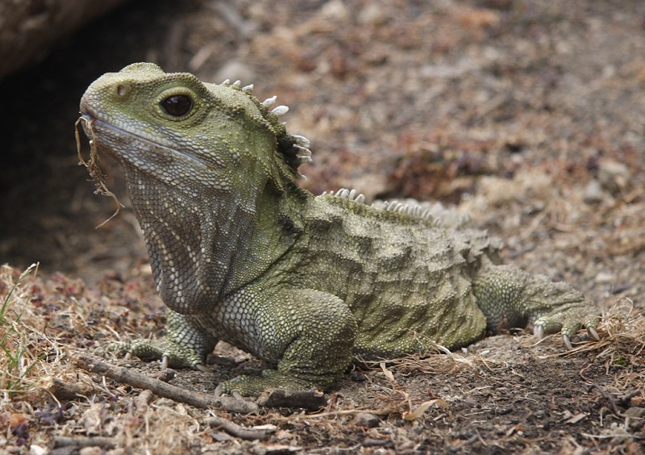
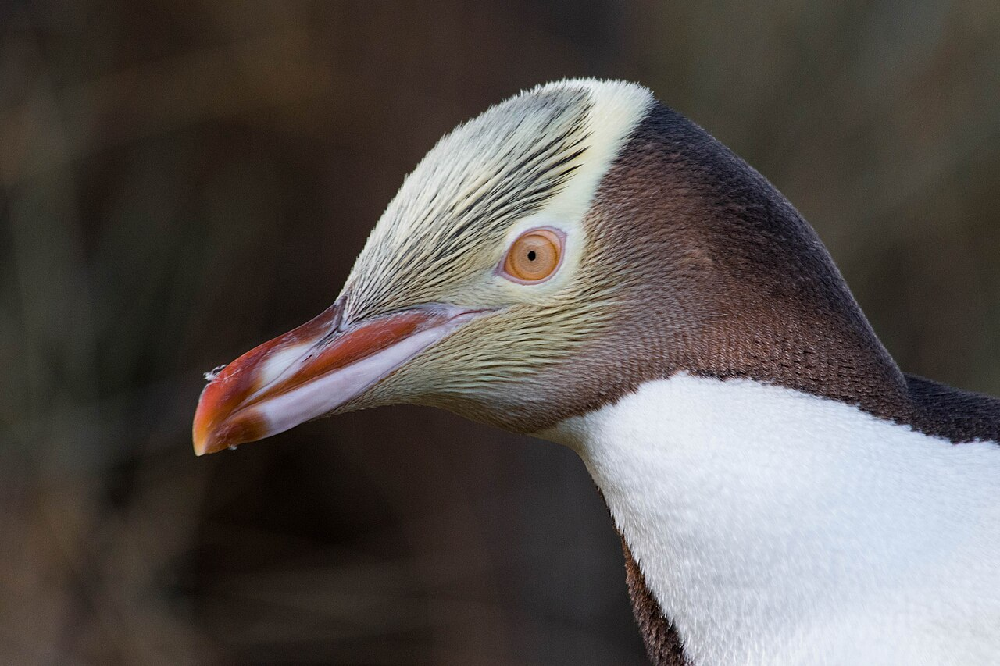
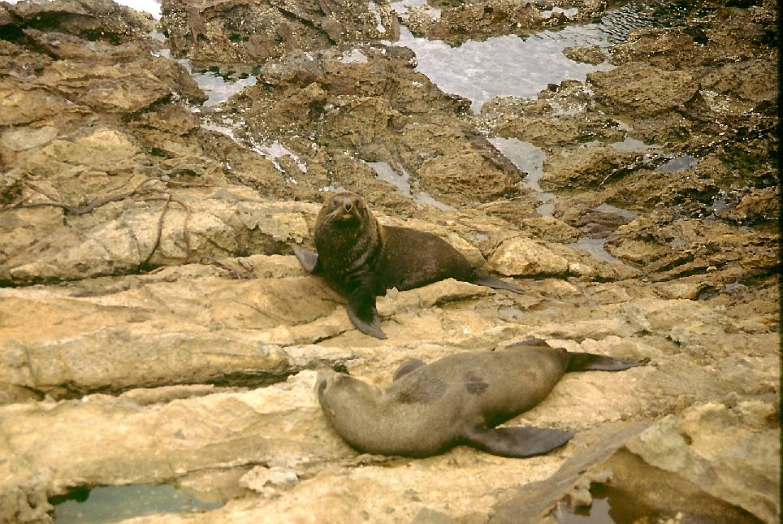
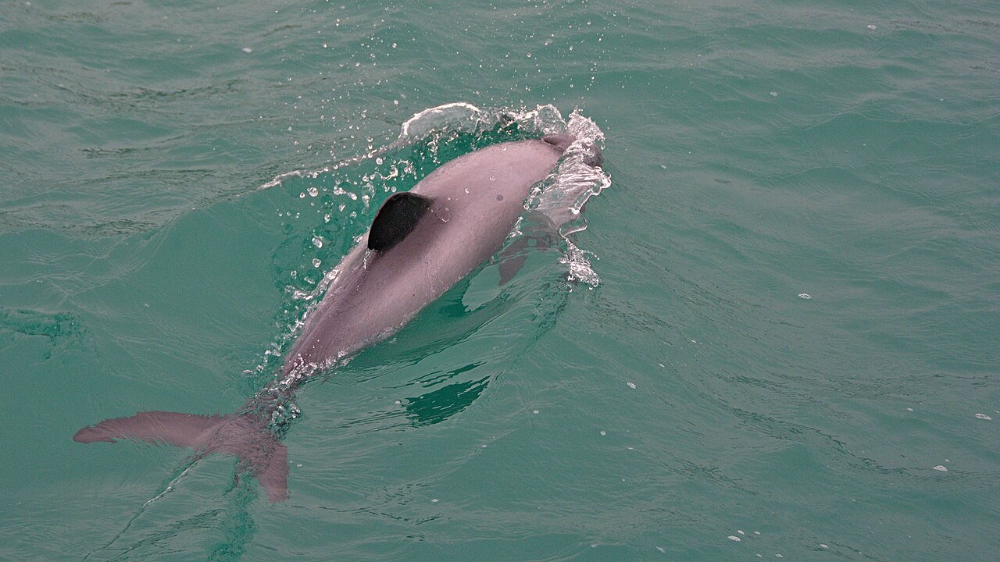

Kiwi
National bird, nocturnal, long beak with nostrils at the tip. Best chance: nocturnal house or guided night walk (Rotorua, Zealandia in Wellington), not a random bush bash.
Taonga
Most native birds evolved without land mammals. That is why kiwi cannot fly, why kea dismantle windscreen rubber, and why you must never feed wildlife. Look, keep distance, and use a sanctuary or licensed tour when the species is nocturnal or endangered.

National bird, nocturnal, long beak with nostrils at the tip. Best chance: nocturnal house or guided night walk (Rotorua, Zealandia in Wellington), not a random bush bash.

The world’s only alpine parrot. Intelligent, olive-green, orange under the wing. You may meet them at Aoraki car parks. Do not feed them; they teach bad habits and chew cars.

Iridescent songbird with a white throat tuft (poi). Mimics phones, car alarms, and other birds. Common in flax and suburban trees — listen in Rotorua and Wellington gardens.

Blue-purple swamp hen with a red shield, strutting in roadside ditches. Bold, comic, and everywhere once you know the shape.

A living fossil, not a lizard — the last of its order. Wild populations are on predator-free islands; most visitors meet them at Te Puia or Zealandia.

One of the world’s rarest penguins. Watch from hides, never approach a nest. On this itinerary you are more likely to see little penguins at dusk on coasts, or seals first.

Ōhau Point and the Kaikōura peninsula (17–18 Dec) are reliable. Stay 20 metres away; they bite, and pups wait while parents fish.

Hector’s / Māui dolphins are among the smallest and rarest. Sperm whales off Kaikōura are the itinerary’s marine headline — book a licensed operator, and skip if the sea is too rough.
Also listen for: pīwakawaka (fantail) that follows you on tracks, weka (bold rails in Fiordland — guard your sandwiches), and bellbirds / korimako in beech forest.